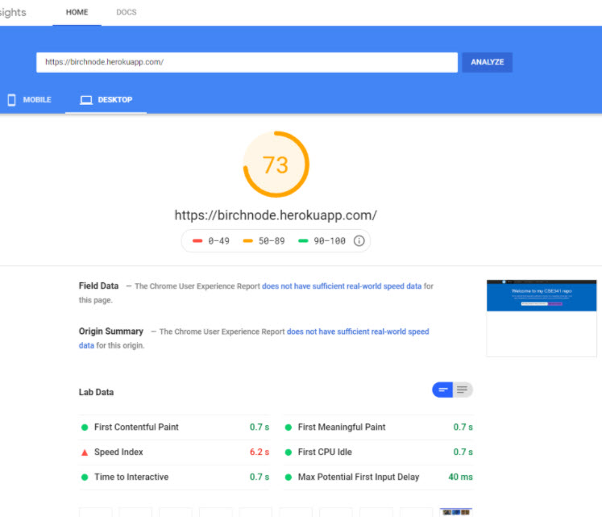
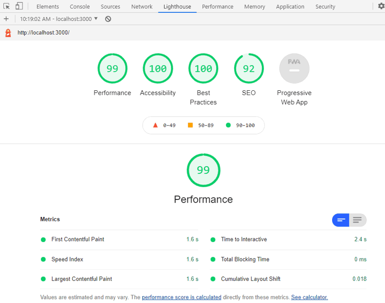

Project Completion Checklist
How do I know when my app is done?
While there are always ways to add on to a project that we have worked on, there are also things that should always be done before our apps are published for wide-spread use. Here are some ideas to help you think about what you should be checking as you prepare to publish an app.
Performance
-
Pass Google Page Speed Insights Test
Plug the site into Google PageSpeed Insights to see your results. If the site requires login / credentials, login to the site first and check the performance with Chrome Page Speed Insights Extension
 -
Use the Lighthouse Audit tool built into Chrome Developer Tools. This tool is similar to PageSpeed Insights, but includes Accessibility and SEO tests in addition to Performance. You can also run Lighthouse after logging into your site.
 -
Another useful tool is Pass GTMetrix Analysis
Security
-
Use HTTPS only. HTTP should always redirect to HTTPS.
-
Qualys SSL Server Test - Aim for a score of A and above
-
Consider these free / open source scanning tools (among others): Qualys, OpenVAS, Nmap, OSSEC, Security Onion, OpenSSH
-
All inputs are validated on the server before processing
-
All input data is encoded before sending the response to the browser
-
Web server directory listing has been disabled
-
CSRF tokens are included in all requests that change state
-
Errors shown to users or on the client do not contain stack traces, source code, full paths or any other internal data.
-
Content type of uploaded files is always verified before uploading.
-
If XML files are handled, external entity is disabled and DTD processing enabled
-
HTTPS is used and Strict-Transport-Security is sent.
-
TLS 1.2 or higher required
-
Session cookies set Secure, HttpOnly and SameSite-lax attributes
-
All other cookies set Secure and if possible, HttpOnly also
-
All 3rd-party libraries that the app uses are updated to the latest version
Authentication Security
-
Passwords are stored using strong cryptography (PBKDF2, HMAC-SHA256, bcrypt)
-
The password is required to change any account information
-
Passwords require at least 12 characters and reject at least the most common 1000 passwords
-
Multi-factor authentication is supported
-
The number of attempts to endpoints such as login, password reset, and 2FA validation is restricted and monitored.
-
Language libraries are used to create and validate JWT tokens
-
When a user logs out (or when a session expires), the session on the server is destroyed and JWT tokens associated with it are invalidated
-
The password reset token is destroyed after use or after expiration.
Broken Links
-
Check that all pages get no broken links on Monkeytest
-
Check that all pages get no invalid links on Screaming Frog
Compatibility
-
Check compatibility with major desktop browsers and their versions (Chrome, Firefox, Safari, Opera, Internet Explorer)
-
Check mobile browsers too!
-
Also, check how Safari (iOS) and Chrome (Android) perform on various screen sizes.
SEO / Social
-
Is it fetched correctly by Google? (Check with Google Webmaster Tools)
-
Is it in the first page of Google Search Results Pages (SERPs)?
-
Does it contain correct OpenGraph tags for social sharing? Test by dropping the link into Facebook / Twitter / Pinterest to see what image, title, and description is generated
-
Does the site or app have the correct Title / Meta Description Tag?
-
Does it have a Favicon?
Nice to Haves
-
Validate HTML/CSS with https://validator.w3.org
-
Check basic Web Accessibility with WAVE or with tools at https://www.w3.org/WAI/ER/tools/
-
Are the 404 pages informative?
-
Does your site need a print stylesheet?
-
Make sure your JavaScript is error free when your page loads (check from Google Chrome’s Developer Tools)
-
Are the URLs reasonable/descriptive? Reasonable URLs helps visitors and search engines understand your content.
-
Does Canonical domain work? (www.abc.com vs abc.com, and so on)